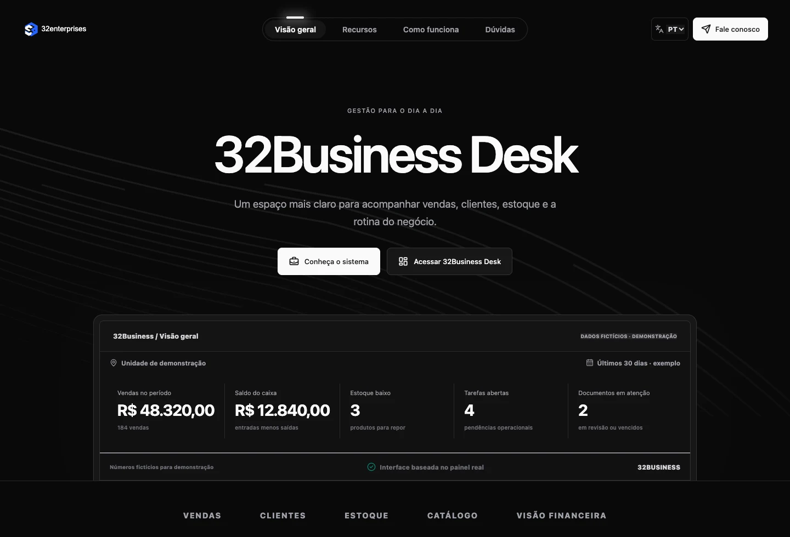
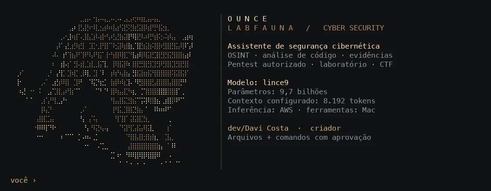

Gestão de negócios
32Business Desk
O sistema de gestão da 32Enterprises: clientes, agenda, catálogo, estoque, vendas e financeiro.
Imagens da reformulação em andamento.Captura do projeto local
Business Desk · Ounce AI · Chameleon
Desenvolvo o Ounce em Python e assumo a arquitetura, o backend e a infraestrutura dos meus projetos. Também programo sistemas web, APIs e aplicativos nativos.

32Business · Reformulação em desenvolvimentoTrabalho selecionado
Selecione um projeto para ver o que programei, as tecnologias que usei e as decisões de implementação.
O sistema de gestão da 32Enterprises: clientes, agenda, catálogo, estoque, vendas e financeiro.
Imagens da reformulação em andamento.CRM, agenda, catálogo, estoque, vendas e financeiro. Módulos por segmento, controle de acesso e persistência no servidor.
Interface responsiva · APIs autenticadas · Cloudflare D1Ferramentas e projetos complementares.
Engenharia de IA · Python
Desenvolvi o runtime que coordena a conversa, as ferramentas e a inferência na AWS. O código do agente é em Python.

Programei o cliente de conversa, a leitura incremental das respostas e o ciclo de chamadas de ferramentas. O runtime decide quando responder e quando aguardar o resultado de uma execução.
Implementei sessões por projeto, orçamento de contexto e redução do histórico. Cada chamada de ferramenta é preservada junto com seu resultado para manter a conversa consistente.
Integrei leitura e escrita de arquivos, execução de comandos e diagnósticos HTTP, DNS e TLS. O código valida caminhos e links simbólicos, bloqueia arquivos sensíveis e pede aprovação para alterações e comandos.
Separei a inferência na EC2 das ferramentas executadas no Mac, com conexão por túnel. Criei testes locais para limites de arquivos, recusa de ações, interrupção de processos e retorno dos resultados ao agente.
O agente precisa manter o estado entre mensagens, chamadas e resultados. Uma ação recusada bloqueia novas execuções naquela rodada. Comandos têm timeout e encerramento do grupo de processos; o histórico precisa caber no contexto sem separar uma chamada da resposta da ferramenta. Esse controle está no código do Ounce.
Ver o fluxo de execuçãoAlém da interface
No Apuração.win, programei a API no Cloudflare e o coletor Python na AWS. No Ounce, integrei o modelo às ferramentas locais. Veja os fluxos abaixo.
Implementei validação de entrada, autorização no servidor e tratamento de falhas nas rotas das aplicações.
SQLite e D1 para persistência. KV e Durable Objects para cache, coordenação e presença.
Sessões, autorização no servidor, isolamento entre contas e segredos fora do navegador.
Davi Costa
Atuo como engenheiro de IA e desenvolvedor de software. No Ounce, programo o runtime, o controle de contexto e as ferramentas em Python. Nas aplicações web uso JavaScript e TypeScript; nos aplicativos nativos, Objective-C; na persistência, SQL. Também uso HTML, CSS e Shell.
Conduzo as decisões de arquitetura, programo as interfaces e o backend, integro os serviços e cuido da publicação. Uso AWS, Cloudflare e ambientes locais no macOS, conforme a necessidade de cada projeto.
Ler estudo sobre autorização em APIsJavaScript · TypeScript · Python · Objective-C · SQL · HTML · CSS · Shell
React · Next.js / Vinext · Tailwind CSS · SVG · WebKit · AppKit
Node.js · Python · REST · SQLite · D1 · Drizzle · KV · Durable Objects
AWS EC2 · SSM · Linux · Cloudflare Workers · Static Assets · GitHub
Tool calling · Streaming · Contexto de agentes · MCP · HyperFrames · Remotion
macOS · Terminal · Git · Playwright · Burp Suite · Nmap · HTTP / DNS / TLS
Código, projetos e estudos de desenvolvimento.